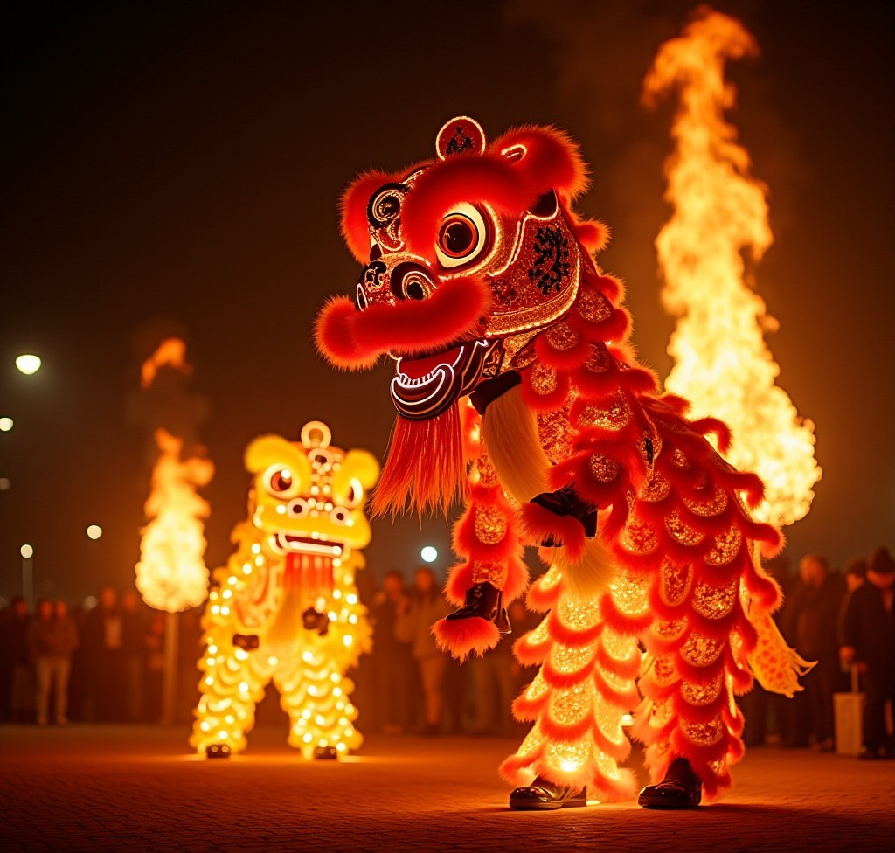
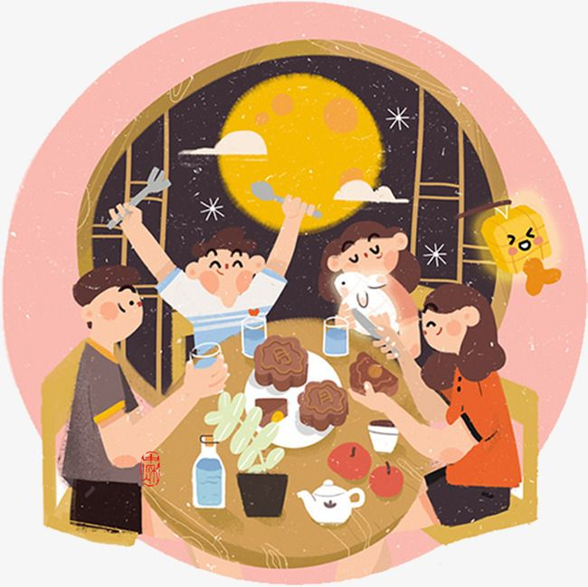
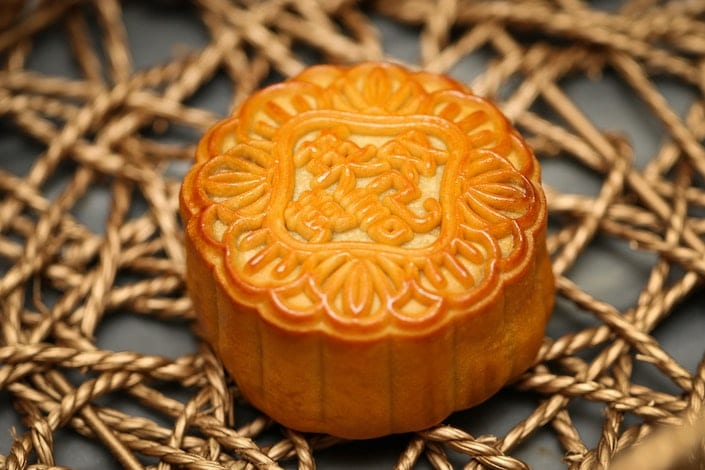

The Mid-Autumn Festival (中秋节, Zhōngqiū Jié) dates back over 3,000 years to the Zhou Dynasty.
It was originally a harvest festival celebrating the moon and giving thanks for the season's bounty.
During the Tang (618 - 907) and Song (960 - 1279) dynasties, it became a more established festival with
moon-viewing traditions, poetry, and family gatherings.
Meaning:
The festival symbolizes family reunion, gratitude, and harmony.
The full moon represents unity, and people celebrate by gathering with loved ones, appreciating the moon, and
offering prayers for happiness and prosperity.
Traditional:
Mooncakes (月饼, yuèbǐng): The most famous festival food, these round pastries symbolize unity
and completeness.
Moon Gazing: Families and friends gather outdoors to admire the full moon.
Lantern Displays: Colorful lanterns are lit and released, symbolizing hope and good
fortune.
Dragon and Lion Dances: Some regions hold performances to celebrate the occasion.
Worshiping the Moon Goddess Chang'e (嫦娥): Legends tell of Chang'e, who drank an elixir of
immortality and now resides on the moon.
Gallery
Lantern Displays: Lighting Up the Night with Festive Joy
Lanterns are a major highlight of the Mid-Autumn Festival,
symbolizing hope, brightness, and good fortune. Children and adults alike carry beautifully crafted lanterns, often shaped like animals,
mythical creatures, or traditional symbols. Cities and villages are decorated with glowing lantern displays, creating a magical and colorful
atmosphere. Some people also write wishes or riddles on lanterns, making it an interactive and joyful celebration.

Dragon and Lion Dances: Bringing Good Luck and Happiness
Dragon and lion dances are a lively and exciting part of the festival,
performed to drive away evil spirits and bring prosperity. The dragon dance features a long, flexible dragon manipulated by multiple performers,
while the lion dance involves dancers wearing vibrant lion costumes. Accompanied by the sounds of drums and cymbals, these performances captivate
audiences and add energy to the festivities, embodying the festival’s spirit of joy and celebration.

Family Gatherings: Cherishing Moments Under the Full Moon
The Mid-Autumn Festival is a time for families to reunite and celebrate together. Loved ones gather for a festive meal, sharing special dishes such as mooncakes, duck, and taro. It is an opportunity to strengthen family bonds, express gratitude, and enjoy a warm atmosphere filled with laughter and storytelling. In modern times, even families who live far apart make efforts to reconnect, making this tradition deeply meaningful.

Eating Mooncakes: A Symbol of Unity and Togetherness
Mooncakes are the most iconic delicacy of the Mid-Autumn Festival. These round
pastries, often filled with lotus seed paste, red bean, or egg yolk, symbolize family unity and completeness. Families exchange mooncakes as gifts,
sharing them with loved ones to express good wishes. The act of cutting and distributing mooncakes represents harmony and the importance of togetherness
during this special time.
Appreciating the Full Moon: A Moment of Reflection and Gratitude
The full moon holds great significance during the Mid-Autumn Festival,
representing unity, happiness, and prosperity. Families and friends gather outdoors to admire its beauty, sometimes making wishes for good fortune and
well-being. Poets and scholars throughout Chinese history have written about the moon's connection to emotions and nostalgia, making moon-gazing a
time for reflection, appreciation, and cultural tradition.